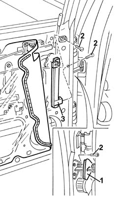

7010D22 rear side door descending window glass guide (one) - r r with door panel (and support frame) removed
- Path
- Procedures > 70 FITTINGS > 7010 PASSENGER COMPARTMENT REAR SIDE DOORS > 7010D rear side door window glasses > 7010D22 rear side door descending window glass guide (one) - r r with door panel (and support frame) removed
- Kind
- repair procedure (removal / refitting; the operation number is the code)
- Applies to
- all engines; all production periods
- Interactive page
- https://sloeber94.github.io/elrnDB-a156/en/#/3238667
Applies to: all engines; all production periods
 Removing
Removing
 Refitting
Refitting7010A04 rear side door water guard protection - r r or arrange with door panel removed
1. With the window fully raised, remove the door rod trim.
2. Undo the bolts fixing the window guide.
3. Remove the window guide.

Applies to: all engines; all production periods
Refitting
RemovingCheck that the guide is undamaged.
Fit the guide.
Tighten the screws.
Fit the door rod trim.
7010A04 rear side door water guard protection - r r or arrange with door panel removed
Check that the window works properly.
Topics linked from this page (1)
Topics that link to this page (8)
- S63 REAR DOORS CREAKING
- 7010D12 fixed window glass element - r r
- 7010D14 rear side door descending window glass - r r with door panel (and mount frame) removed
- 7010D15 rear side door descending window glass-r r
- 7010D18 rear side door descending window glass channel r r
- 7010D23 rear side door descending window glass guide one-r r
- 7010E50 rear side door pillar trim (one) lh or rh - r r
- 7205E38 Stripping REAR SIDE DOOR